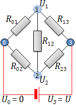
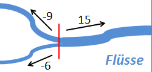
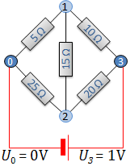
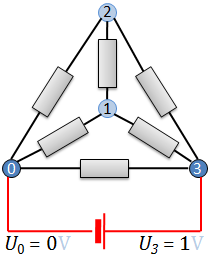

Netzwerke aus elektrischen Widerständen

Die Aufgabenstellung
Zwischen zwei Punkten eines Netzwerks aus elektrischen Widerständen wird eine Spannung U angelegt.
Gesucht ist der Strom I, der nun durch das Netzwerk fließt.
Im nebenstehenden Bild sind die Anschlusspunkte dunkelblau, die übrigen Knotenpunkte des Netzwerks hellblau markiert.
wie nummerieren die Knoten ab Null durch, wobei wir 0 und die höchste Zahl (im Bild 3) für die Anschlusspunkte verwenden.
Den Widerstand zwischen den Knoten i und k
bezeichnen wir mit Rik
und den Strom, der vom Knoten i zum Knoten k fließt, mit
Iik. Da der Strom eine Richtung hat, ist
Iki = -Iik.
Das ohmsche Gesetz
Nach dem
ohmschen Gesetz ist die Spannung zwischen zwei durch einen Widerstand verbundenen Knoten
gleich dem Produkt aus Widerstand und durchfließenden Strom:
U_i - U_k = R_{ik} I_{ik}
Mit dem
Leitwert
(Kehrwert des Widerstandes) ergibt sich daraus
I_{ik} = \sigma_{ik} (U_i - U_k)
Wir schreiben das für die Leitwerte der fünf Widerstände hin:
\def\yellow{\bbox[#ffffa0,2pt]}
\eqalign{
\yellow{I_{01}} & = & \sigma_{01} U_1 \cr
\yellow{I_{02}} & = & \sigma_{02} U_2 \cr
\yellow{I_{12}} & = & \sigma_{12} (U_2 - U_1) \cr
\yellow{I_{13}} & = & \sigma_{13} (U - U_1) \cr
\yellow{I_{23}} & = & \sigma_{23} (U - U_2)
}
Die erste kirchhoffsche Regel

Nun betrachten wir die erste
kirchhoffsche Regel.
Diese sagt einfach, dass kein Strom verloren geht:
Die Summe der in einen Knotenpunkt hineinfließenden Ströme ist gleich der
Summe der herausfließenden Ströme. (Oder noch einfacher, wenn man hineinfließenden Ströme
als negative herausfließenden Ströme ansieht:
Die Summe der von einem Knoten wegfließenden Ströme ist Null.)
Wir wenden die erste kirchhoffsche Regel für alle inneren Knoten (im Beispiel 1 und 2) an:
\eqalign{
I_{01} & = I_{12} + I_{13} \cr
I_{02} & = I_{21} + I_{23} \cr
}
Da allgemein Iik = -Iki ist,
verwenden wir besser nur Ströme von einem kleinerem zu einem größeren Index:
\eqalign{
\yellow{I_{01}} & = \yellow{I_{12}} + \yellow{I_{13}} \cr
\yellow{I_{02}} & = -\yellow{I_{12}} + \yellow{I_{23}}
}
Kombination der Gleichungen
Nun setzen wir die durch das ohmsche Gesetz gewonnenen Gleichungen
in die mit der kirchhoffschen Regel gewonnenen Gleichungen ein:
\eqalign{
\sigma_{01} U_1 & = \sigma_{12} (U_2 - U_1) + \sigma_{13} (U - U_1) \cr
\sigma_{02} U_1 & = -\sigma_{12} (U_2 - U_1) + \sigma_{23} (U - U_2)
}
Nach den Unbekannten U1 und U1 gegliedert, ergibt sich:
\eqalign{
(\sigma_{01} + \sigma_{12} + \sigma_{13}) U_1 - \sigma_{12} U_2 & = \sigma_{13} U \cr
-\sigma_{12} U_1 + (\sigma_{02} + \sigma_{12} + \sigma_{23}) U_2 & = -\sigma_{23} U
}
Wir müssen also das Gleichungssystem
\pmatrix{ \sigma_{01} + \sigma_{12} + \sigma_{13} & - \sigma_{12} \cr
-\sigma_{12} & \sigma_{02} + \sigma_{12} + \sigma_{23}}
\cdot
\pmatrix{U_1 \cr U_2}
= \pmatrix{\sigma_{13} U \cr \sigma_{23} U}
lösen.

Dazu betrachten wir konkrete Widerstände, setzen U3 auf 1V
und lassen die Dimensionen weg:
\pmatrix{ \frac 1 5 + \frac 1 {15} + \frac 1 {10} & - \frac 1 {15} \cr
-\frac 1 {15} & \frac 1 {25} + \frac 1 {15} + \frac 1 {20}}
\cdot
\pmatrix{U_1 \cr U_2}
= \pmatrix{\frac 1 {10} \cr \frac 1 {20}}
Dieses Gleichungssystem kann mathGUIde für uns lösen:
A = Matrix([[1/5+1/15+1/10, -1/15], [-1/15, 1/25+1/15+1/20]])
b = ~Vector([1/10, 1/20])
A.solve(b)
Der Gesamtwiderstand
Wir kennen jetzt die Spannung zwischen den inneren Knoten (1, 2) und dem Ausgangsknoten (0).
Der Rest ist einfach: Mit dem ohmschen Gesetz berechnen wir die beiden vom Ausgangsknoten wegfließenden Ströme:
\eqalign{
I_{01} & = \frac {U_1} {R_{01}} = U_1 \sigma_{01} \cr
I_{02} & = \frac {U_1} {R_{02}} = U_2 \sigma_{02}
}
Mit der ersten kirchhoffschen Regel berechnen wir nun den Gesamtstrom durch das Netzwerk.
Der verteilt sich am Eingangsknoten (0) auf die beiden Zweige nach Knoten 1 und 2:
I = I_{01} + I_{02}
Damit ergibt sich der Gesamtwiderstand:
R = \frac U I = \frac {1V} I
A = Matrix([[1/5+1/15+1/10, -1/15], [-1/15, 1/25+1/15+1/20]])
b = ~Vector([1/10, 1/20])
U = A.solve(b)
U1, U2 = U[0,0], U[1,0]
I01 = U1/5
I02 = U2/25
I = I01 + I02
R = 1/I
print("Gesamtwiderstand: {0} Ohm".format(R))
Zusammenfassung des Verfahrens
- Die Knoten des Netzwerks von Null bis n durchnummerieren,
wobei die Indizes 0 und n für die Anschlussknoten verwendet werden.
- Für jede Kante (Widerstand) das ohmsche Gesetz in der Form I = σU hinschreiben.
- Für jeden inneren Knoten (1 bis n-1) die 1. kirchhoffsche Regel hinschreiben.
- In den in Schritt 3 hingeschriebenen Regeln die Ströme durch die
rechten Seiten der Gleichungen aus Schritt 2 ersetzen.
- Die Gleichungen aus Schritt 4 nach den Unbekannten U1
bis Un-1 gliedern und U0 auf Null (Volt)
und Un auf 1 (Volt) setzen.
- Das Gleichungssystem lösen.
- Mit Hilfe der nun bekannten Knotenspannungen und des ohmschen Gesetzes
die Summe I der vom Knoten Null ausgehenden Ströme berechnen.
Daraus dann wiederum mit dem ohmschen Gesetz den Gesamtwiderstand
(1V/I) berechnen.
Übungsaufgabe

Sechs Widerstände von 10 Ω, 12 Ω, 15 Ω, 18 Ω, 22 Ω und 27 Ω werden zu einem
Tetraeder verlötet.
Schreiben Sie ein mathGUIde-Programm, das folgendes ausgibt:
- Die Anzahl unterschiedlicher möglicher Widerstände zwischen zwei Ecken eines solchen Tetraeders,
- den niedrigsten und den höchsten dieser Widerstände,
- den größten prozentualen Sprung zwischen zwei aufeinanderfolgenden sortierten Widerständen.
Hinweise
- Verwenden Sie die mathGUIde-Funktion
permutations, um alle möglichen Anordnungen der Widerstände zu ermitteln.
- Bauen Sie eine Liste aller möglichen Widerstände auf (um Duplikate sicher zu finden,
sollten Sie mit rationalen Zahlen (Klasse
Rational) rechnen).
- Sortieren Sie diese Liste (mit der Listen-Methode
sort).
- Das folgende kleine Beispiel zeigt Ihnen alle technischen Mittel, die Sie zur Lösung benötigen:
Gesucht sind alle rationalen Zahlen (in aufsteigender Reihenfolge), die sich in der Form
\frac a b + \frac c d
schreiben lassen, wobei a, b, c und d die Zahlen 1, 2, 3 und 4 in beliebiger Reihenfolge sind.
l = []
for p in permutations([1,2,3,4]):
s = Rational(p[0],p[1]) + Rational(p[2],p[3])
if not s in l:
l.append(s)
l.sort()
print(l)